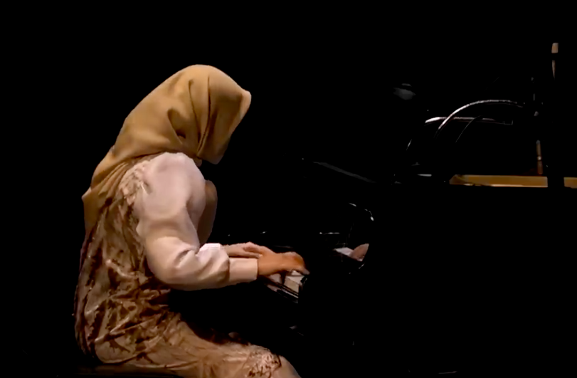

Tributes SMA Negeri 3 Bandung 2023 adalah acara musik klasik tahunan yang diselenggarakan oleh sekolah, menampilkan siswa-siswa berbakat dalam memainkan karya-karya musik klasik. Acara ini diadakan di Dago Tea House, salah satu tempat seni dan budaya yang ikonik di Bandung, yang menawarkan suasana yang sempurna untuk menikmati alunan musik klasik. Tributes menjadi momen istimewa bagi para pemain untuk menunjukkan kemampuan mereka dalam menampilkan karya-karya komposer besar dunia, sekaligus memperkenalkan musik klasik kepada generasi muda.
Pada Tributes 2023, para pemain terdiri dari siswa-siswa pilihan yang telah melalui proses seleksi ketat. Mereka adalah siswa yang memiliki keahlian dalam memainkan alat musik seperti piano, biola, cello, hingga orkestra kecil yang disusun untuk membawakan komposisi-komposisi klasik. Selama berbulan-bulan, mereka berlatih keras di bawah bimbingan guru musik sekolah untuk menyuguhkan penampilan yang memukau dan penuh emosi. Setiap detik dari penampilan mereka dipersiapkan dengan sangat matang.

Repertoar yang dibawakan dalam Tributes 2023 mencakup karya-karya dari komposer legendaris seperti Ludwig van Beethoven, Wolfgang Amadeus Mozart, Johann Sebastian Bach, dan Claude Debussy. Masing-masing komposisi dipilih dengan hati-hati untuk menghadirkan suasana yang bervariasi, mulai dari yang energik dan penuh semangat hingga yang lembut dan mendayu-dayu. Keindahan melodi dan harmoninya berhasil menyihir penonton yang hadir, membuat mereka terhanyut dalam alunan musik yang sarat makna.
Dago Tea House, sebagai lokasi acara, menambah keistimewaan Tributes tahun ini. Tempat yang dikenal sebagai pusat kesenian dan budaya ini memiliki panggung terbuka yang memberikan kesan alami dan menyatu dengan alam Bandung yang sejuk. Pada malam hari, lampu-lampu panggung yang temaram dan tata suara yang megah semakin menghidupkan suasana, membuat setiap nada yang dimainkan terasa lebih magis dan mendalam. Penonton bisa merasakan pengalaman mendengarkan musik klasik yang sangat berbeda dari biasanya.
Tributes bukan hanya sekadar acara musik, tetapi juga sebuah penghargaan terhadap warisan musik klasik dunia. Acara ini bertujuan untuk memperkenalkan musik klasik kepada generasi muda serta mengapresiasi karya seni yang telah bertahan berabad-abad. Selain itu, Tributes juga menjadi ajang bagi siswa-siswa untuk mengeksplorasi minat dan bakat mereka dalam bidang musik, khususnya musik klasik, yang mungkin tidak terlalu banyak diminati oleh anak muda pada umumnya.
Acara ini juga disambut antusias oleh para guru, orang tua, dan alumni SMA Negeri 3 Bandung. Banyak dari mereka yang hadir di Dago Tea House untuk memberikan dukungan penuh kepada para pemain. Kehadiran mereka menjadi dorongan semangat bagi para siswa yang tampil, menambah kehangatan dan keintiman suasana. Bagi banyak orang tua, menyaksikan anak-anak mereka bermain musik klasik di panggung bergengsi seperti ini adalah kebanggaan tersendiri.
Setiap tahun, Tributes menghadirkan sesuatu yang baru dan segar. Di Tributes 2023, salah satu yang paling dinantikan adalah kolaborasi antara orkestra sekolah dengan seorang pianis tamu, yang merupakan alumni SMA Negeri 3 Bandung. Kolaborasi ini berhasil menciptakan harmoni yang luar biasa, dan menjadi penampilan puncak yang membuat seluruh penonton berdiri memberikan tepuk tangan meriah. Momen ini menggarisbawahi betapa pentingnya acara seperti Tributes dalam merayakan musik klasik dan menyatukan generasi melalui seni.
Secara keseluruhan, Tributes SMA Negeri 3 Bandung 2023 di Dago Tea House menjadi malam yang tak terlupakan. Tidak hanya memperlihatkan bakat luar biasa dari siswa-siswa dalam memainkan musik klasik, tetapi juga memperkuat hubungan antara seni, pendidikan, dan komunitas. Acara ini membuktikan bahwa musik klasik masih bisa hidup dan dinikmati di kalangan anak muda, serta memberikan pengalaman artistik yang mendalam bagi semua yang terlibat.